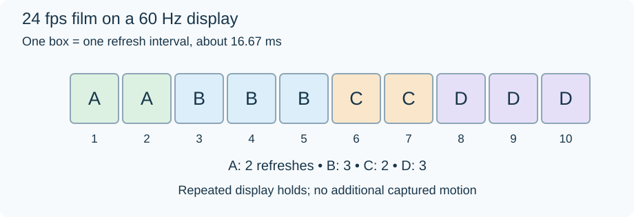

Frame-Rate Conversion
Frame-rate conversion changes the number or timing of pictures presented each second.
A 24 fps source provides pictures every 41.667 ms. A 30 fps output needs one every 33.333 ms. Frame-rate conversion decides what picture to put at each new output time.
There are two separate questions: should the programme retain its duration, and should the additional output pictures be copies or newly constructed images? Answering them leads to different results.
Place existing pictures on the new timeline
Take four consecutive 24 fps pictures:
| Source picture | Start time |
|---|---|
| A | 0 ms |
| B | 41.667 ms |
| C | 83.333 ms |
| D | 125 ms |
The four-picture span ends at 166.667 ms. Five 30 fps intervals fit the same duration.
One illustrative policy selects whichever source picture was already visible at the requested output instant:
| 30 fps output time | Selected source picture |
|---|---|
| 0 ms | A |
| 33.333 ms | A |
| 66.667 ms | B |
| 100 ms | C |
| 133.333 ms | D |
The output is A, A, B, C, D. Its duration is unchanged, but A receives two output intervals while the others receive one. For steady movement, the object pauses longer at A's position, then advances through the others more quickly.
This table is a declared hold-latest policy, not a claim that every converter chooses that phase. Nearest-time selection or other timestamp rules can repeat a different picture. The unequal allocation remains a property of fitting these rates together with existing pictures.
Converting to a lower rate has the corresponding selection problem. Some source pictures have no output slot and are omitted. The programme can remain the same length while containing fewer motion observations.
Construct a picture for the requested time
Instead of copying A at an intermediate time, a converter can combine or estimate the scene between A and B.
Blending combines sample values from neighboring pictures. It can make the transition less abrupt, but a moving object may appear at both positions with partial opacity.
Motion interpolation estimates correspondence and movement, then constructs an intermediate position. It can make the output motion more evenly sampled, while adding pictures inferred from the source. The interpolation article follows that reconstruction in detail.
These methods preserve the intended programme timeline when their output timestamps remain tied to it. They change the images used at those times.
Retiming the source changes duration
A different operation plays every original picture once, but at another speed.
A one-hour, exact 24 fps sequence has 86,400 pictures. Present those pictures at 25 fps:
86,400 ÷ 25 = 3,456 seconds = 57 minutes 36 seconds.
The playback speed increases by 25/24, about 4.167%. Duration is multiplied by 24/25 = 0.96, a reduction of 4%. No extra picture has been created and no original one need be dropped.
Audio events and subtitles must follow the new timeline. An event at 120 seconds in the original belongs at 115.2 seconds in this speed-changed version. Audio processing then needs to decide how to handle pitch as well as duration.
This is why changing an fps description can be consequential if it changes timestamps, while merely displaying a rounded rate label is harmless.
A screen can change the holds without changing the file
A 24 fps film fits a 120 Hz display with five refreshes per picture. At 60 Hz, a common presentation alternates two and three refreshes.

One illustrative display-hold phase for exact 24 fps and 60 Hz. Ten refresh intervals present four film pictures; these are not newly captured frames.
Selecting a compatible display mode can retain the encoded picture sequence while making its display holds uniform. Creating a 60 fps file by repetition instead stores an output schedule that a 60 Hz display can follow, but does not remove the underlying uneven hold of the film pictures.
Interlaced motion times before frame-rate conversion
For an interlaced recording, identify and reconstruct the field times before treating a reported pair rate as a progressive rate. A 25-frame-pair source can contain 50 motion times. Converting those pairs as if they were 25 complete camera moments can omit motion before later processing gets a chance to preserve it.
For an Emby conversion, compare source timestamps, output timestamps and pictures, programme duration, and display refresh. A rate change with the same duration indicates picture allocation or synthesis; a proportional duration change indicates retiming. The visible result follows the operation performed, rather than the fps number alone.